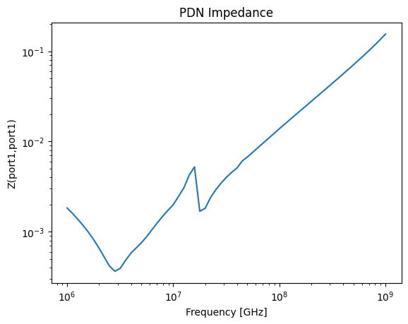

Download this example
Download this example as a Jupyter Notebook or as a Python script.
Set up EDB for Power Distribution Network Analysis#
This example shows how to set up the electronics database (EDB) for power integrity analysis from a single configuration file.
Perform imports and define constants#
Perform required imports.
[1]:
import json
import os
import tempfile
import time
import matplotlib.pyplot as plt
from ansys.aedt.core import Hfss3dLayout
from ansys.aedt.core.examples.downloads import download_file
from pyedb import Edb
Define constants.
[2]:
AEDT_VERSION = "2025.2"
NUM_CORES = 4
NG_MODE = False
Download the example PCB data.
[3]:
temp_folder = tempfile.TemporaryDirectory(suffix=".ansys")
download_file(source="touchstone", name="GRM32_DC0V_25degC_series.s2p", local_path=temp_folder.name)
file_edb = download_file(source="pyaedt/edb/ANSYS-HSD_V1.aedb", local_path=temp_folder.name)
Load example layout#
[4]:
edbapp = Edb(edbpath=file_edb, version=AEDT_VERSION)
PyEDB INFO: Star initializing Edb 05:20:26.104111
PyEDB INFO: Edb version 2025.2
PyEDB INFO: Logger is initialized. Log file is saved to C:\Users\ansys\AppData\Local\Temp\pyedb_ansys.log.
PyEDB INFO: legacy v0.71.0
PyEDB INFO: Python version 3.10.11 (tags/v3.10.11:7d4cc5a, Apr 5 2023, 00:38:17) [MSC v.1929 64 bit (AMD64)]
PyEDB INFO: Database ANSYS-HSD_V1.aedb Opened in 2025.2
PyEDB INFO: Cell main Opened
PyEDB INFO: Builder was initialized.
PyEDB INFO: open_edb completed in 9.5439 seconds.
PyEDB INFO: EDB initialization completed in 9.6704 seconds.
Create an empty dictionary to host all configurations#
[5]:
cfg = dict()
Assign S-parameter model to capactitors.#
Set S-parameter library path.
[6]:
cfg["general"] = {"s_parameter_library": os.path.join(temp_folder.name, "touchstone")}
Assign the S-parameter model.
Keywords
name. Name of the S-parameter model in AEDT.
component_definition. Known as component part number of part name.
file_path. Touchstone file or full path to the touchstone file.
apply_to_all. When set to True, assign the S-parameter model to all components share the same component_definition. When set to False, Only components in “components” are assigned.
components. when apply_to_all=False, components in the list are assigned an S-parameter model. When apply_to_all=False, components in the list are NOT assigned.
reference_net. Reference net of the S-parameter model.
[7]:
cfg["s_parameters"] = [
{
"name": "GRM32_DC0V_25degC_series",
"component_definition": "CAPC0603X33X15LL03T05",
"file_path": "GRM32_DC0V_25degC_series.s2p",
"apply_to_all": False,
"components": ["C110", "C206"],
"reference_net": "GND",
}
]
Define ports#
Create a circuit port between power and ground nets.
Keywords
name. Name of the port.
reference_desinator.
type. Type of the port. Supported types are ‘ciruict’, ‘coax’.
positive_terminal. Positive terminal of the port. Supported types are ‘net’, ‘pin’, ‘pin_group’, ‘coordinates’.
negative_terminal. Positive terminal of the port. Supported types are ‘net’, ‘pin’, ‘pin_group’, ‘coordinates’.
[8]:
cfg["ports"] = [
{
"name": "port1",
"reference_designator": "U1",
"type": "circuit",
"positive_terminal": {"net": "1V0"},
"negative_terminal": {"net": "GND"},
}
]
Define SIwave SYZ analysis setup#
Keywords
name. Name of the setup.
type. Type of the analysis setup. Supported types are ‘siwave_ac’, ‘siwave_dc’, ‘hfss’.
pi_slider_position. PI slider position. Supported values are from ‘0’, ‘1’, ‘2’. 0:speed, 1:balanced, 2:accuracy.
freq_sweep. List of frequency sweeps.
name. Name of the sweep.
type. Type of the sweep. Supported types are ‘interpolation’, ‘discrete’, ‘broadband’.
frequencies. Frequency distribution.
distribution. Supported distributions are ‘linear_count’, ‘linear_scale’, ‘log_scale’.
start. Start frequency. Example, 1e6, “1MHz”.
stop. Stop frequency. Example, 1e9, “1GHz”.
increment.
[9]:
cfg["setups"] = [
{
"name": "siwave_syz",
"type": "siwave_ac",
"pi_slider_position": 1,
"freq_sweep": [
{
"name": "Sweep1",
"type": "interpolation",
"frequencies": [{"distribution": "log_scale", "start": 1e6, "stop": 1e9, "increment": 20}],
}
],
}
]
Define Cutout#
Keywords
signal_list. List of nets to be kept after cutout.
reference_list. List of nets as reference planes.
extent_type. Supported extend types are ‘Conforming’, ‘ConvexHull’, ‘Bounding’. For optional input arguments, refer to method pyedb.Edb.cutout()
[10]:
cfg["operations"] = {
"cutout": {
"signal_list": ["1V0"],
"reference_list": ["GND"],
"extent_type": "ConvexHull",
}
}
Write configuration into as json file#
[11]:
file_json = os.path.join(temp_folder.name, "edb_configuration.json")
with open(file_json, "w") as f:
json.dump(cfg, f, indent=4, ensure_ascii=False)
Import configuration into example layout#
[12]:
edbapp.configuration.load(config_file=file_json)
[12]:
<pyedb.configuration.cfg_data.CfgData at 0x20206223d60>
Apply configuration to EDB.
[13]:
edbapp.configuration.run()
PyEDB INFO: Updating nets finished. Time lapse 0:00:00
PyEDB INFO: Updating components finished. Time lapse 0:00:00
PyEDB INFO: Creating pin groups finished. Time lapse 0:00:00
PyEDB INFO: Placing sources finished. Time lapse 0:00:00
PyEDB INFO: Applying materials finished. Time lapse 0:00:00
PyEDB INFO: Updating stackup finished. Time lapse 0:00:00
PyEDB INFO: Applying padstack definitions and instances completed in 0.0474 seconds.
PyEDB INFO: Applying S-parameters finished. Time lapse 0:00:00.031933
PyEDB INFO: Applying package definitions finished. Time lapse 0:00:00
PyEDB INFO: Applying modeler finished. Time lapse 0:00:00
PyEDB INFO: Placing ports finished. Time lapse 0:00:01.438734
PyEDB INFO: Placing terminals completed in 0.0000 seconds.
PyEDB INFO: Placing probes finished. Time lapse 0:00:00
PyEDB INFO: -----------------------------------------
PyEDB INFO: Trying cutout with (0.002)*(1000.0)mm expansion size
PyEDB INFO: -----------------------------------------
PyEDB INFO: Cutout Multithread started.
PyEDB INFO: Net clean up Elapsed time: 0m 2sec
PyEDB INFO: Extent Creation Elapsed time: 0m 0sec
PyEDB INFO: 1310 Padstack Instances deleted. Elapsed time: 0m 1sec
PyEDB INFO: 265 Primitives deleted. Elapsed time: 0m 6sec
PyEDB INFO: 702 components deleted
PyEDB INFO: Cutout completed. Elapsed time: 0m 9sec
PyEDB INFO: EDB file save completed in 0.1108 seconds.
PyEDB INFO: Cutout completed in 1 iterations with expansion size of (0.002)*(1000.0)mm Elapsed time: 0m 9sec
PyEDB INFO: Applying operations completed in 9.0352 seconds.
PyEDB WARNING: sweep_type parameter is deprecated. Use ``discrete`` parameter instead
PyEDB INFO: Applying setups completed in 0.4605 seconds.
[13]:
True
Save and close EDB.
[14]:
edbapp.save()
edbapp.close()
PyEDB INFO: Save Edb file completed in 0.0952 seconds.
PyEDB INFO: Close Edb file completed in 0.1306 seconds.
[14]:
True
The configured EDB file is saved in a temp folder.
[15]:
print(temp_folder.name)
C:\Users\ansys\AppData\Local\Temp\tmpzbwx1p7z.ansys
Load edb into HFSS 3D Layout.#
[16]:
h3d = Hfss3dLayout(edbapp.edbpath, version=AEDT_VERSION, non_graphical=NG_MODE, new_desktop=True)
PyAEDT INFO: Python version 3.10.11 (tags/v3.10.11:7d4cc5a, Apr 5 2023, 00:38:17) [MSC v.1929 64 bit (AMD64)].
PyAEDT INFO: PyAEDT version 0.26.dev0.
PyAEDT INFO: Initializing new Desktop session.
PyAEDT INFO: AEDT version 2025.2.
PyAEDT INFO: New AEDT session is starting on gRPC port 50351.
PyAEDT INFO: Starting new AEDT gRPC session on port 50351.
PyAEDT INFO: Launching AEDT server with gRPC transport mode: wnua
PyAEDT INFO: Electronics Desktop started on gRPC port 50351 after 11.4 seconds.
PyAEDT INFO: AEDT installation Path C:\Program Files\ANSYS Inc\v252\AnsysEM
PyAEDT INFO: Connected to AEDT gRPC session on port 50351.
PyAEDT WARNING: Service Pack is not detected. PyAEDT is currently connecting in Insecure Mode.
PyAEDT WARNING: Please download and install latest Service Pack to use connect to AEDT in Secure Mode.
PyAEDT INFO: EDB folder C:\Users\ansys\AppData\Local\Temp\tmpzbwx1p7z.ansys\pyaedt\edb\ANSYS-HSD_V1.aedb has been imported to project ANSYS-HSD_V1
PyAEDT INFO: Active Design set to 0;main
PyAEDT INFO: AEDT objects correctly read
Analyze#
[17]:
h3d.analyze(cores=NUM_CORES)
PyAEDT INFO: Project ANSYS-HSD_V1 Saved correctly
PyAEDT INFO: Key Desktop/ActiveDSOConfigurations/HFSS 3D Layout Design correctly changed.
PyAEDT INFO: Solving all design setups. Analysis started...
PyAEDT INFO: Design setup None solved correctly in 0.0h 0.0m 45.0s
PyAEDT INFO: Key Desktop/ActiveDSOConfigurations/HFSS 3D Layout Design correctly changed.
[17]:
True
Plot impedance#
[18]:
solutions = h3d.post.get_solution_data(expressions="Z(port1,port1)")
plot_data = solutions.get_expression_data(convert_to_SI=True, formula="mag")
x, y = plot_data
plt.plot(x, y)
plt.title("PDN Impedance")
plt.xlabel("Frequency [GHz]")
plt.ylabel("Z(port1,port1)")
plt.xscale("log")
plt.yscale("log")
plt.show()
PyAEDT INFO: Parsing C:\Users\ansys\AppData\Local\Temp\tmpzbwx1p7z.ansys\pyaedt\edb\ANSYS-HSD_V1.aedt.
PyAEDT INFO: File C:\Users\ansys\AppData\Local\Temp\tmpzbwx1p7z.ansys\pyaedt\edb\ANSYS-HSD_V1.aedt correctly loaded. Elapsed time: 0m 0sec
PyAEDT INFO: aedt file load time 0.4116806983947754
PyAEDT INFO: PostProcessor class has been initialized! Elapsed time: 0m 1sec
PyAEDT INFO: Post class has been initialized! Elapsed time: 0m 1sec
PyAEDT INFO: Loading Modeler.
PyAEDT INFO: Modeler loaded.
PyAEDT INFO: Modeler class has been initialized! Elapsed time: 0m 0sec
PyAEDT INFO: No EDB gRPC setting provided. Disabling gRPC for EDB.
PyAEDT INFO: Loading EDB with Dotnet enabled.
PyEDB INFO: Star initializing Edb 05:21:59.696022
PyEDB INFO: Edb version 2025.2
PyEDB INFO: Logger is initialized. Log file is saved to C:\Users\ansys\AppData\Local\Temp\pyedb_ansys.log.
PyEDB INFO: legacy v0.71.0
PyEDB INFO: Python version 3.10.11 (tags/v3.10.11:7d4cc5a, Apr 5 2023, 00:38:17) [MSC v.1929 64 bit (AMD64)]
PyEDB INFO: Database ANSYS-HSD_V1.aedb Opened in 2025.2
PyEDB INFO: Cell main Opened
PyEDB INFO: Builder was initialized.
PyEDB INFO: open_edb completed in 0.2196 seconds.
PyEDB INFO: EDB initialization completed in 0.2300 seconds.
PyAEDT WARNING: No report category provided. Automatically identified Standard
PyAEDT INFO: Solution Correctly loaded. Elapsed time: 0m 0sec
PyAEDT INFO: Solution Correctly parsed. Elapsed time: 0m 0sec

Shut Down Electronics Desktop#
[19]:
h3d.close_desktop()
PyAEDT INFO: Desktop has been released and closed.
[19]:
True
[20]:
# Wait 3 seconds before cleaning the temporary directory.
time.sleep(3)
Clean up#
All project files are saved in the folder temp_folder.name. If you’ve run this example as a Jupyter notebook, you can retrieve those project files. The following cell removes all temporary files, including the project folder.
[21]:
temp_folder.cleanup()
Download this example
Download this example as a Jupyter Notebook or as a Python script.